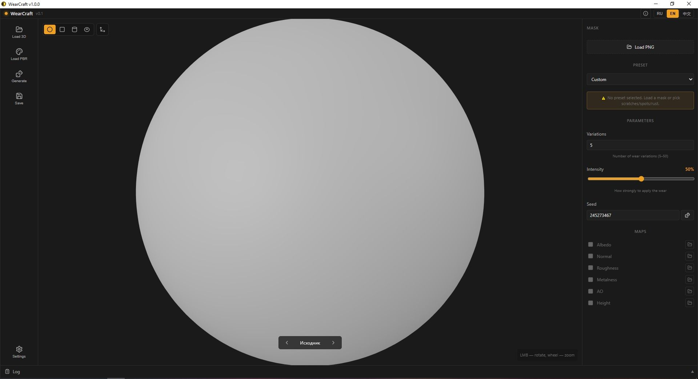
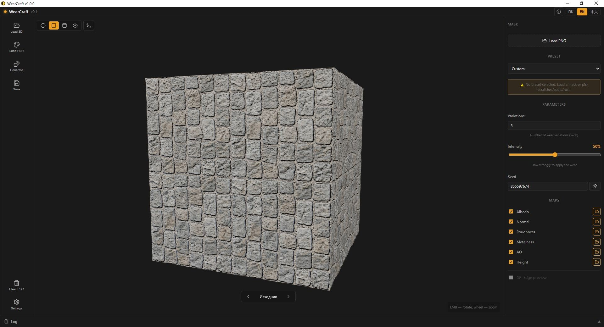
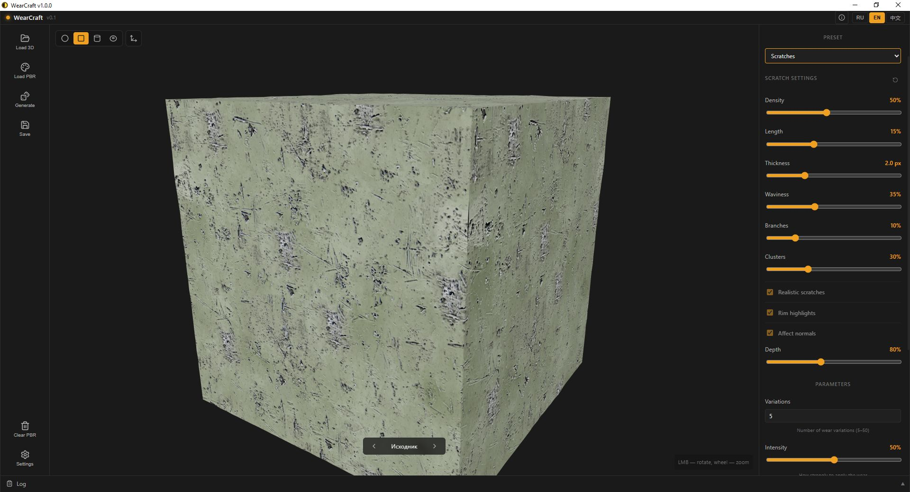
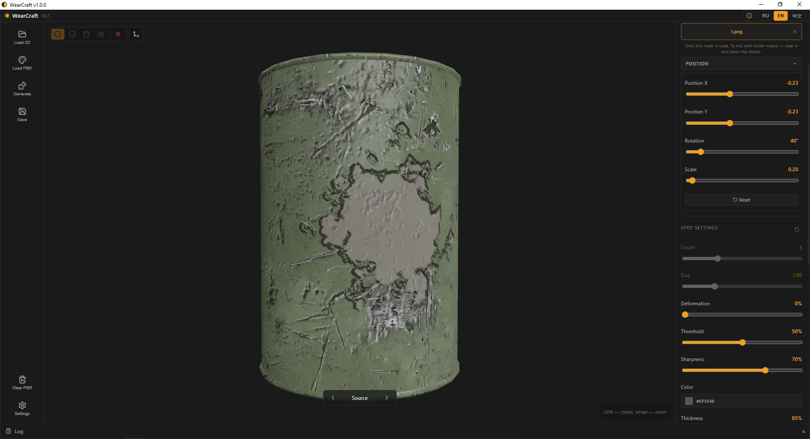

WearCraft v1.0.0
Процедурный генератор износа для PBR-текстур
Что это
WearCraft — десктопное приложение для процедурной генерации износа PBR-текстур. Загрузи PBR-сет (albedo, normal, roughness, ao, height, metalness, edge), сгенерируй N уникальных вариаций износа и экспортируй в игровые движки.
Встроенный 3D-вьюер показывает результат в реальном времени. Превью полностью совпадает с запечённым результатом — что видишь, то и получишь.
Возможности
Пресеты
Custom mask, процедурные царапины, пятна, ржавчина
Маски
Своя маска (один PNG) или библиотека (папка в %APPDATA%)
Позиционирование
Двигай, крути, масштабируй каждое пятно. Тайлинг на вариацию
Параллельная генерация
На базе rayon. N уникальных вариаций, каждая со своим seed
3D-вьюер
Сфера, куб, цилиндр, тор или своя модель .obj / .gltf
Экспорт в движки
Unreal (ORM + DX normal), Unity (MetallicSmoothness, Built-in / URP)
Локализация
Русский, English, 中文
PBR-пресеты
Все параметры настроены под тип материала
Скриншоты






Системные требования
| Параметр | Минимум | Рекомендуется |
|---|---|---|
| ОС | Windows 10 / 11 (64-bit) | Windows 11 (64-bit) |
| Процессор | Quad-core 2.0 GHz | Hexa-core 3.0 GHz |
| ОЗУ | 8 GB | 16 GB |
| Графика | Встроенная GPU | NVIDIA GTX 1650 / AMD RX 5700 |
| DirectX | 11 | 12 |
| Диск | 2 GB | 8 GB SSD |
Установщик полностью оффлайн — WebView2 вшит. Поддерживаются 4K и 8K текстуры.
Установка
Скачай WearCraft_1.0.0_x64-setup.exe и запусти. Установщик предложит два режима:
- Per-user — установка в %LOCALAPPDATA%, без прав администратора
- Per-machine — установка в Program Files, требует прав администратора